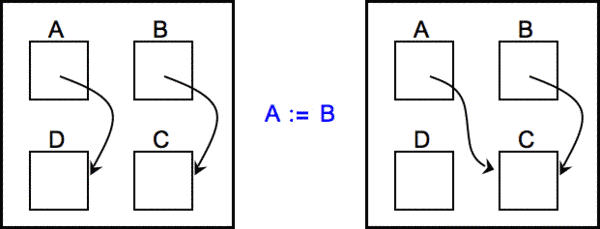
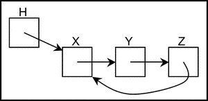
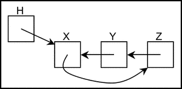

On dispose de boîtes reliées par des flèches. Une instruction, utilisant le signe :=, permet de modifier une flèche.
Par exemple, l'instruction A := B modifie la flèche qui part de A. Après l'exécution de cette instruction, la flèche qui part de A est modifiée pour arriver au même endroit que la flèche qui part de B.
| AVANT | APRÈS | |
|  | ||
On souhaite maintenant effectuer la transformation illustrée ci-dessous en utilisant une séquence d'instructions à exécuter dans l'ordre.
| AVANT | APRÈS |
|  |  |
Quelle est la séquence qui convient ?
La séquence 4 est celle qui convient Z := X puis X := Y puis Y := H.
| Situation initiale | H pointe vers X | X pointe vers Y | Y pointe vers Z | Z pointe vers X |
| Situation après Z := X | H pointe vers X | X pointe vers Y | Y pointe vers Z | Z pointe vers Y |
| Situation après X := Y | H pointe vers X | X pointe vers Z | Y pointe vers Z | Z pointe vers Y |
| Situation après Y := H | H pointe vers X | X pointe vers Z | Y pointe vers X | Z pointe vers Y |
Les autres séquences ne conviennent pas.
On peut voir les boîtes comme des cases mémoires, c'est-à-dire des emplacements dans la mémoire d'un ordinateur dans lequel on peut stocker des valeurs. En particulier, il est possible de stocker dans une case mémoire l'adresse d'une autre case mémoire. Une valeur qui correspond à l'addresse d'une case mémoire est appelée un pointeur. Les pointeurs jouent un rôle fondamental en programmation.